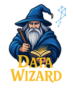

Inventas un negocio, generas sus datos y construyes todo lo que viste en las 22 sesiones: ingesta, Bronze, Silver y Gold, features, un Genie Agent, un dashboard y gobierno, desplegado con un bundle. Es la prueba de que sabes hacerlo sin guía paso a paso.
En el curso construiste Wizard Bank siguiendo guías. Ahora el negocio, los datos y las decisiones son tuyos. Se evalúa que se pueda volver a desplegar, que esté gobernado y que alguien de negocio pueda usarlo.
Cualquiera con entidades que cambian en el tiempo, transacciones y algo que medir. Algunas ideas:
Tiendas, ventas por ticket, inventario y devoluciones.
Envíos, rutas, tracking en tiempo real, entregas fallidas.
Citas, médicos, sedes. Datos sensibles: ideal para gobierno.
Medidores, lecturas por hora, tarifas, cortes y reclamos.
Suscripciones, catálogo, reproducciones, churn.
Alumnos, cursos, notas, asistencia, deserción.
ai_gen.Elige una o combina varias, y justifica la elección.
| Fuente | Cómo se ingesta | Lo viste en |
|---|---|---|
| Base relacional | Postgres en Lakebase o propio, por JDBC o Lakeflow Connect; CDC si la fuente lo permite | S9 · S11.2 |
| Archivos en S3 | External location de Unity Catalog + Auto Loader (cloudFiles) en un pipeline | S12 · S19 |
| Volume de Unity Catalog | CSV, JSON o Parquet en /Volumes/… + Auto Loader. Lo más simple en Free Edition | S7 · S12 |
| Eventos en streaming | Un generador de eventos continuo, leído con Structured Streaming | S11 · S17 |
Todo lo que construyas tiene que poder borrarse y volver a crearse con un solo databricks bundle deploy y una corrida del pipeline. Si algo solo existe porque lo hiciste a mano en la interfaz, no cuenta.
Es la misma arquitectura de Wizard Bank. Cada caja es una pieza que se espera ver en tu repositorio y en tu workspace.
_archivo, _ingestado_en)dev y prod · GitHub Actions (bonus)| Capa | Mínimo esperado | Lo viste en |
|---|---|---|
| Bronze | Ingesta incremental e idempotente: correr dos veces no duplica. Metadatos de origen en cada fila. El esquema puede evolucionar sin romper | S11 · S12 · S14 |
| Silver | Al menos 3 expectations (una que descarte filas), tipos correctos, sin duplicados, y un maestro con historia en SCD2 | S15 · S16 · S19 |
| Gold | Un modelo estrella, al menos 2 tablas de métricas con comentarios en las columnas, una metric view con sus medidas, y una feature table con PRIMARY KEY (…, TIMESERIES) | S18 · S20 |
| Consumo | Un Genie Agent con 8 a 12 preguntas de benchmark, medido antes y después de mejorar los metadatos, y un dashboard con 4 a 6 visualizaciones | S20.2 · S22 |
| Gobierno | Permisos por grupo (GRANT), un row filter o una column mask sobre un dato sensible, y una consulta de linaje que muestre el recorrido de una tabla Gold | S21 |
| Despliegue | Un bundle con targets dev y prod que crea el esquema, el pipeline y un job que lo orquesta | S13 · S21.2 |
Por qué esa fuente y ese modo de ingesta; qué columna es SCD2 y por qué; cuál es el grano de cada tabla Gold; qué tabla le das a Genie y cuál no; quién ve qué dato y por qué.
Los entregables obligatorios cubren el curso completo. Los bonus son para quien quiera ir más allá: no reemplazan a un obligatorio que falte.
AUTO CDCS15 · S16 · S19GRANT, un row filter o una column mask, y una consulta de linajeS21dev y prod: esquema, pipeline y un job que lo orquestaS13 · S21.2main, con main protegidaS21.2Un solo pipeline activo por tipo, un solo endpoint de AI Search y trabajos con límite de concurrencia. Diseña con eso en mente: un pipeline con todas las capas, como el de Wizard Bank, entra sin problema.
Una estructura sugerida, basada en el repositorio del curso. Puedes cambiarla si explicas por qué en el README.
mi-lakehouse/ ├── README.md # negocio, arquitectura, decisiones ├── datagen/ # generador de datos sintéticos │ └── generar_datos.py ├── lakehouse/ # el bundle │ ├── databricks.yml # targets dev y prod │ ├── resources/ │ │ ├── schema.yml │ │ ├── pipeline.yml │ │ └── job.yml │ ├── transformations/ # Bronze, Silver, Gold │ ├── metric_views/ │ └── gobierno/ # grants, row filter, mask ├── consumo/ │ ├── genie_benchmark.md │ └── dashboard.lvdash.json ├── specs/ # bonus: SDD └── .github/workflows/ # bonus: CI/CD
# lakehouse/databricks.yml (resumen)
bundle:
name: mi_lakehouse
variables:
catalog: { default: mi_catalogo }
schema: { default: mi_negocio_dev }
targets:
dev:
default: true
presets:
pipelines_development: true
trigger_pause_status: PAUSED
prod:
mode: production
variables:
schema: mi_negocio_prod
Otra persona clona tu repo, cambia el host y el perfil, corre databricks bundle deploy y la ejecución del job, y obtiene tu Lakehouse completo.
| Hito | Qué queda listo | Cómo se demuestra |
|---|---|---|
| 1 · Diseño | Negocio elegido, modelo de datos, fuentes y spec de cada pieza | README con diagrama y specs |
| 2 · Datos e ingesta | Generador funcionando y Bronze incremental desde la fuente elegida | Dos corridas sin duplicados |
| 3 · Silver y Gold | Calidad, SCD2, estrella, métricas, metric view y feature table | Event log con expectations y conteos |
| 4 · Consumo y gobierno | Genie Agent con benchmark, dashboard, permisos y seguridad fina | Puntaje antes/después, prueba con grupos |
| 5 · Producción | Bundle en dev y prod, y CI/CD si haces el bonus | bundle deploy -t prod desde cero |
Una rúbrica sobre 100 puntos, más hasta 15 de bonus. Lo que pesa más es lo que separa a un Data Engineer de alguien que siguió un tutorial: que el pipeline sea confiable, que esté gobernado y que se despliegue solo.
| Criterio | Puntos | Qué se ve en un proyecto excelente |
|---|---|---|
| Datos e ingesta | 15 | Datos con problemas realistas, fuente bien elegida, ingesta incremental que no duplica al correr dos veces |
| Silver y calidad | 15 | Expectations con criterio de negocio, SCD2 correcto y verificable con una consulta de historia |
| Gold y features | 20 | Grano claro en cada tabla, comentarios útiles, metric view con medidas bien definidas, feature table sin fuga de datos |
| Genie y dashboard | 15 | Benchmark con preguntas trampa, mejora medida en el puntaje, dashboard que responde preguntas del negocio |
| Gobierno | 10 | Permisos mínimos por grupo, seguridad fina sobre el dato sensible correcto, linaje mostrado |
| Despliegue con bundle | 15 | Todo como código, dev y prod separados, se despliega desde cero sin pasos manuales |
| README y defensa | 10 | Explica el negocio y cada decisión, la demo corre en vivo, responde por qué y no solo qué |
| Total | 100 | Bonus: CI/CD +5 · AI Functions o AI Search +5 · streaming, SDD o secretos +5 |
Puedes usar Genie Code, Claude Code o cualquier asistente. En la defensa tienes que poder explicar cada línea: si una parte la escribió un agente, la spec que le diste es parte de tu entrega.

En 22 sesiones construiste un Lakehouse que ingesta, transforma, gobierna, se despliega solo y responde preguntas en español. El proyecto final es lo mismo, con tus datos y tus decisiones.
Compártelo en LinkedIn con #DataWizard cuando lo termines: un repositorio que se despliega desde cero vale más que cualquier certificado.